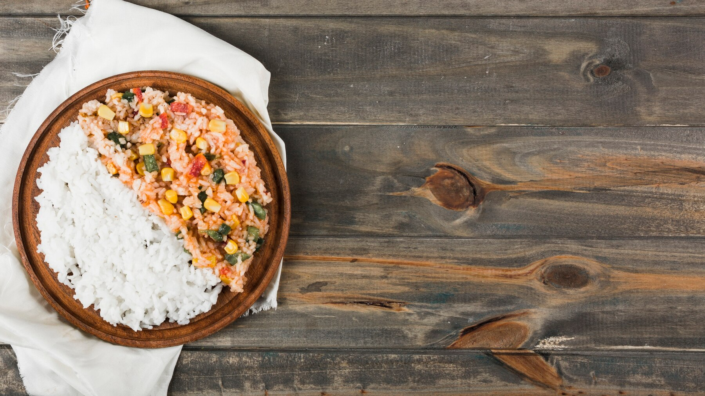

Tuna and Rice

Description:
An easy meal to make.
Ingredients:
- 3 cups microwave brown rice
- 1 tbsn extra virgin olive oil
- 2x 185g cans tuna in springwater
- 1 lemon, juiced
- 1 tomato
- 1/2 cup tinned corn
- 1/2 cup frozen peas
Steps:
- Cook the brown rice in the microwave following the directions on the packet
- Cook the peas in the microwave with a small amount of water for 2-3 minutes or until cooked through
- Drain the corn and tuna
- Dice the tomato into small pieces
- Mix the olive oil and lemon juice together with a fork
- Combine rice, peas, corn, tuna and tomato in a bowl with the olive oil and lemon juice dressing and mix gently to combine
Other Recipes